塞上江南寄年华 千年风华蕴黄沙
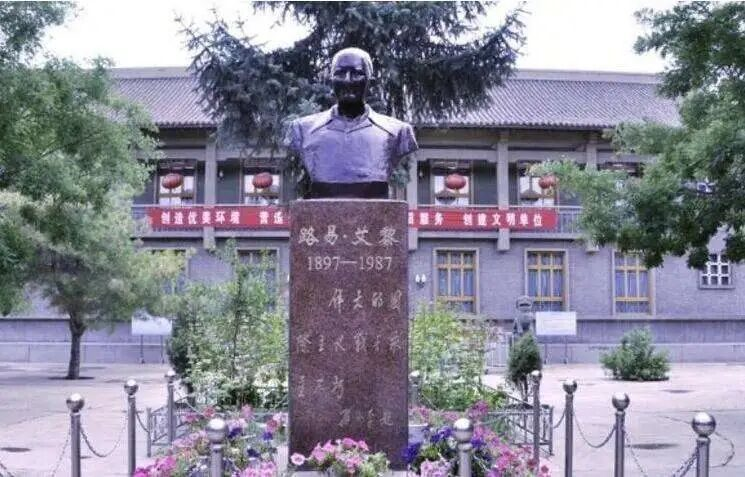
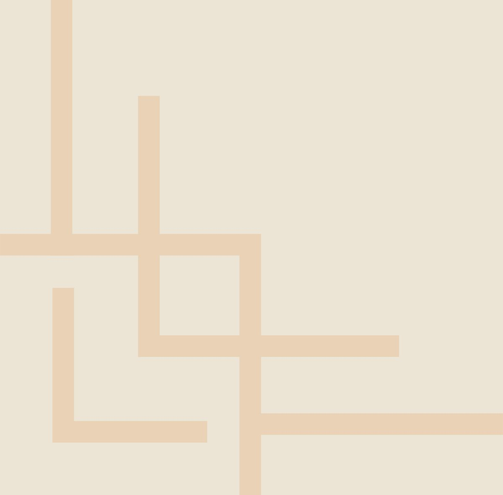
行者无疆 赓续前行

北风呼啸，新春将至，行者们探寻的脚步却尚未停下，在刺骨寒风中我们迎来本次实践最后一站，踏过隆冬瑞雪，拂去袖上黄沙，行者们开启了甘肃文化之旅。
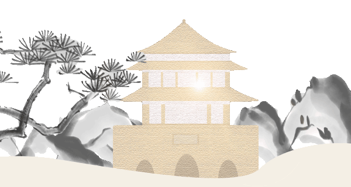
甘肃之旅的第一天，我们来到了艾黎捐赠文物博物馆，该博物馆为纪念国际友人艾黎的突出贡献修建并陈列了其所捐赠的历史文物四千余件。同时，我们有幸采访了该馆的馆长，更加深切地体会到了艾黎先生对山丹的深厚感情，同时深入地了解了山丹深厚的历史底蕴及其作为河西走廊腰峰的重要地位。
左右滑动查看馆内详情
记史忆情
在1943年的春天，新西兰人艾黎由于机缘巧合来到山丹，他发现山丹矿产资源十分的丰富，农牧业发展空间大，远离前线战争，又是红军战斗过的地方，是办学的希望之乡，并且，这里的人民十分的淳朴善良，他们的生活却十分的贫苦，因此，艾黎决定留下来帮助山丹的人们，帮助他们建立医院，建立学校，来帮助他们摆脱这样的贫困生活。艾黎在山丹创办了培黎学校，在山丹生活和从事教育工作近10年，为中国和甘肃的社会主义建设事业培养了大批有用人才。
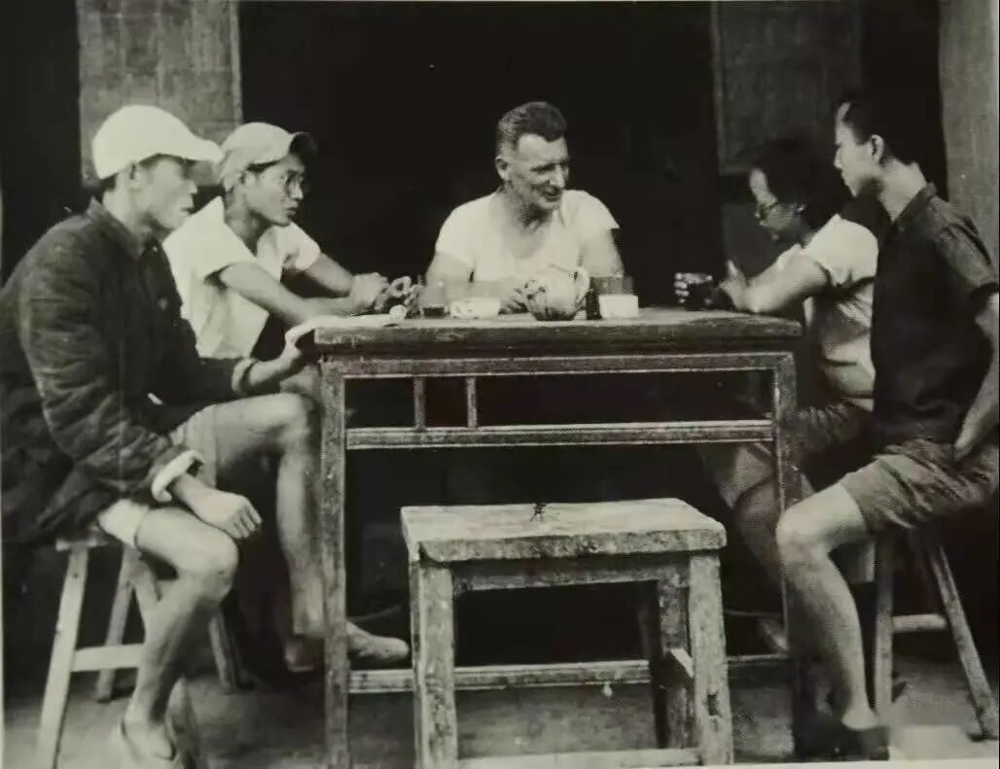
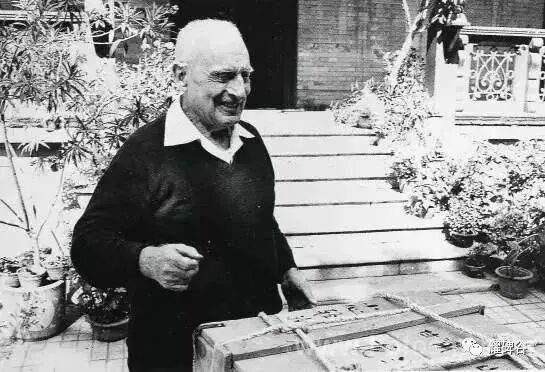
在中国五十多年期间，艾黎精心收集珍藏了4000多件中国历史文物，并将全部文物捐献给山丹人民。在博物馆中博物馆中藏有一个非常有纪念意义的碗，它是在艾黎先生在山丹创办的第一家陶瓷厂中烧制成功的。碗底有蓝色共合的标志，由艾黎先生亲手设计，代表一起合作意思。
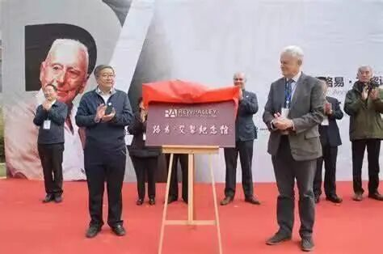
本馆的镇馆之宝，全国仅此一件的唐代青铜像“胡腾舞铜人“，该铜人头戴尖帽，身穿窄袖衫，脚蹬锦靴，作腾踏状踩六瓣莲座之上，背后背着一个酒壶。胡腾舞的是经西域九国之中的古石国经丝绸之路传入中原的一种健美的舞蹈，可以称为甘肃文化的一个象征。
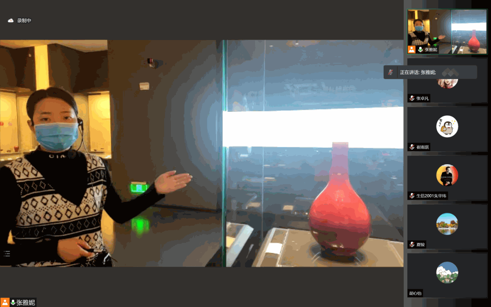
陇右风华
三皇五帝是中华文明的起源，其中三皇指的就是伏羲，炎帝和黄帝，据专家考证，最早的是伏羲，伏羲时代距今约6000到8000年，他的代表性的遗址，最贴近目前甘肃天水的大地湾遗址，所以说，甘肃历史文化悠久。
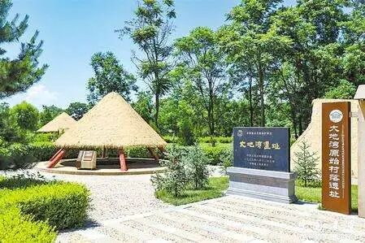
在山丹境内，有一段汉明长城作为河西走廊长城防御体系的重要组成部分，它是由黄土版筑而成的。汉长城和明长城蜿蜒并行，像这样在不同历史时期修筑并行的古长城，在国内是绝无仅有的。
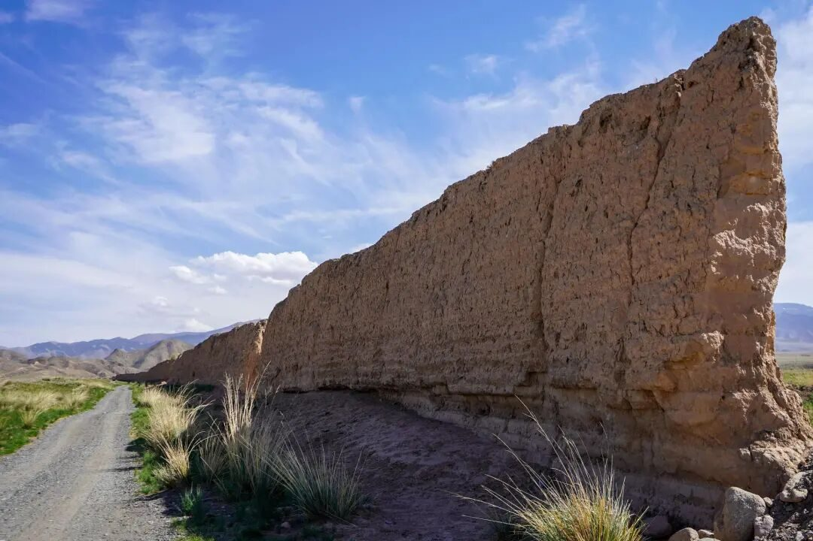

佛教由印度起源，经由新疆、河西走廊传至内陆，在甘肃有了飞速的发展，在张掖地区有一个保存保存着一个开凿时间悠久，对历史和石窟艺术的研究都有很大价值的马蹄寺石窟。马蹄寺石窟自北凉时期开凿，距今有1600多年的历史，石马蹄寺窟群它不像其他的石窟群由皇家主导开凿的，它是由个人开凿的，是河西走廊上的重要的佛教圣地。
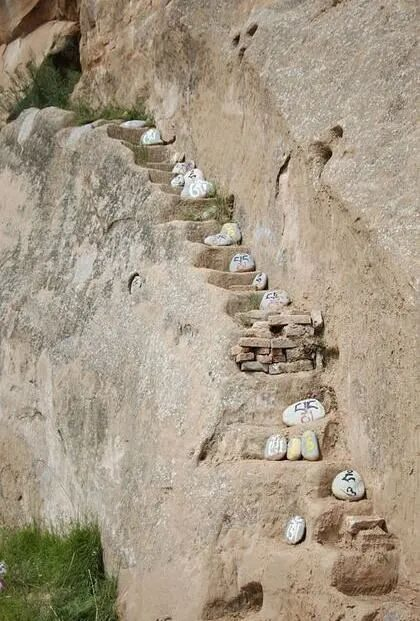
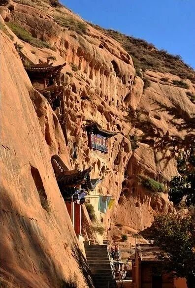
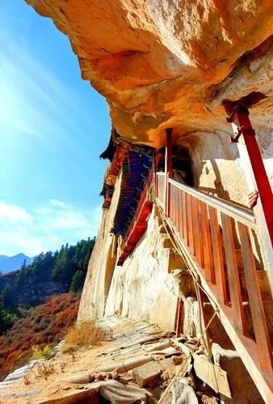
位于“丝路咽喉”的山丹是河西走廊至关重要的一环，千百年来，朔风黄沙中无数商队来往，丝丝驼铃阵阵梵音，共同见证山丹成为一个集商贸枢纽、军事要塞、文化交融的圣地于一身的城市，它们堆砌出山丹的神秘而滚烫灵魂，吸引着一批又一批行者探访。
在风雨飘摇的年代，那四千余件几经辗转来到艾黎手中的文物已经不仅仅是文明的缩影，他们更被艾黎赋予了特殊的意义，他们代表和平、代表信仰，代表陇右的黄沙将深埋在华夏血脉里的善良与温柔传递给了世界上那些与我们不同肤色不同文明的人们。千年来，河西走廊风沙飞扬车马不停，丝绸之路的商贸往来也种下文化交融的种子，使我们跨越国家和民族而心紧紧相连。
甘肃张掖
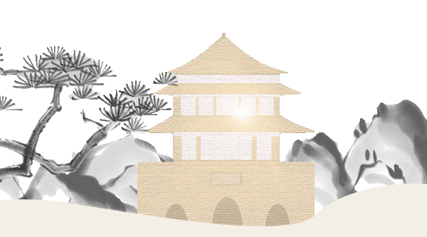
来源丨行者无疆实践团
文字丨胡心怡
排版丨邢璐娅
审核丨温兆琪 朱华玮